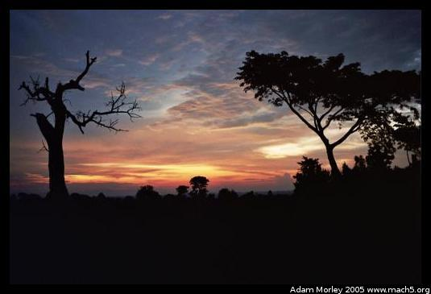
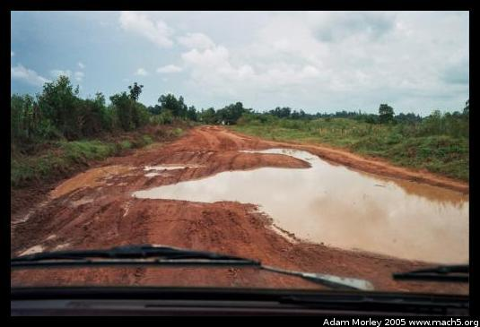
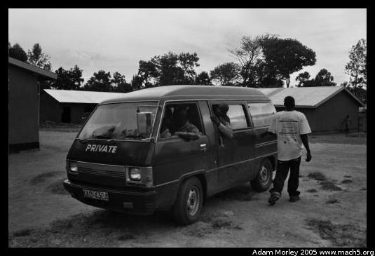

I spent most of August and part of September 2005 in Kenya, doing HIV/AIDS eduction with a local Kenyan organization, started and run by Kenyans. You can visit their website here:
ICODEI (Inter-community development involvement)I came to Kenya after visiting Cape Town, a wonderful city in South Africa. South African Airways gave me tasty food and a good view on my way into Nairobi. Because ICODEI is a highly organized, mostly student run organization on the US/British side (it was started in Kenya by Kenyans who still run it), the volunteers arrive and are placed at hostels in the Nairobi area. Usually, volunteers stay at Upper Hill Campsite, a wonderful place to stay close to Nairobi but away from the perpetual smog. I couldn't get a bus ticket to go to my volunteer program straight away, so I hung out in Nairobi for a day with some wonderful British women from Oxford. We went to the Giraffe Center outside Nairobi. It provided a wonderful way for me to remember African public transportation: always available, and always going somewhere. Not always where one wants to go, but with some patience, it's possible to get anywhere and have a good story about the trip.
The next day, I took a bus to get to Bungoma, Kenya, the nearest large town to where I would be volunteering. I was to live on a farm outside Kabula, a small Kenyan village. For just over a month, I was to do HIV/AIDS education work with the Kenyan organization called ICODEI. Because ICODEI is quite "on-the-ball," I was luckily told to ride EasyCoach, an absolutely wonderful bus line where people have assigned seats and even tasty biscuits on departure. After a comfortable eight hour bus ride, I arrived in Bungoma and called up Reuben to make my way to the farm where volunteers stay with ICODEI. He was kind enough to come and fetch me from the bus station, and take me back to his family's homestead. He also welcomed me to western Kenya, my new home for a month.
The homestead also functions as the headquarters for ICODEI. Reuben's father was kind enough to donate land for the clinic, school, and other ICODEI buildings.
So what does this place look like? I took some pictures of the area around the farm and the people, family and friends of ICODEI. I also took some photos of Kabula and Bungoma. Kabula is the village near ICODEI, and Bungoma is the nearest large town.
I spent most of my days riding around in the famous green van, on dusty (sometimes wet), rural roads going to or from a mobile clinic or HIV/AIDS education session. ICODEI employs translators, nurses, doctors, drivers, lab techs, administrators, and many more. All are Kenyan, and all are from the local community. It is funded purely based on donations and volunteer fees. The capability and effectiveness of a local, grass-roots organization cannot be understated. The amount, quality, and scope of service that ICODEI provides on it's limited budget is impressive.

A Kenyan road from the front seat of the green van
The green van, in this photo being used not for mobile clinics but as a school bus.I taught a number of programs in the area about HIV/AIDS, and also participated in mobile clinic work where the nurses, doctor, lab tech and pharmacist are brought to the people who need them. You can see photos of Programs, and photos of the area around Bungoma.
During my time in Kenya, I also had a fair amount of down time or weekend time where I could go traveling around. I traveled to Kisumu, the third largest town in Kenya, Kakamega and the Kakamega Forest Reserve (the largest remaining piece of rain forest outside the Congo), Kericho (the tea capital of Kenya), and Kitale. Just before I left the farm in Kabula to go on Safari, I purchased a cow, which Wendy named Sophie.
I also went on Safari in the Maasai Mara National Park, the other "side" of Serengeti National Park in Tanzania.
On the night I was to fly from Nairobi to Dubai, my Emirates flight was overbooked. Not only did Emirates give me a free ticket from Nairobi to Dubai, but they put me up in a ridiculous five-star hotel in Nairobi. Having just come from Safari and a mud hut, it was quite odd to stay in a hotel where the breakfast buffet was 12$US. Thankfully, Emirates was paying for food too! Luckily, my host brother Stallone was in town trying to get his Visa to return to the USA for more studies. So we had a fun time in the hotel and around town.
The next night, Emirates got me on my flight and I headed to Dubai, UAE for a twenty-three hour tour that was supposed to be forty nine.
When I returned home and unpacked, I took a look at the water filter I used while in Kenya. Yikes.
This photo journal is what was left after I sorted through around six hundred photos taken over the month and change I was in Kenya. All are film, as I have stopped using digital cameras after trying them out rather extensively for around a year and about eight thousand photos. They kept dying on me, so I gave up and went back to film, which doesn't require charging and all that nonsense.
I found my time in Kenya to be a wonderful experience. Kenyans are great people, though faced by many troubling challenges. The recent constitutional referendum in Kenya was one I watched with particular interest. Not a day goes by that I don't think of how many chickens I could buy for the price of a stick of butter, or some other commodity here in my home country.
Plug: you can donate to ICODEI at the Volunteer Kenya website.
Adam can be reached at adam dot morley at gmail dot com